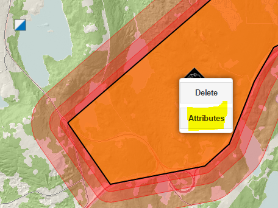
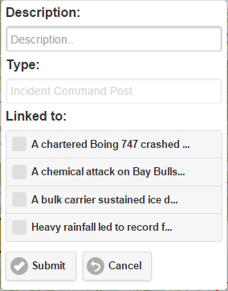

Using the same way than a previous step, we need to activate the edition mode and then click on the symbol. In this case, we will choose the attributes option:

Then the dialog attributes window will show up:

So you will able to write a description of the resource. It is a text free, it is doable to store any kind of information in this field. The 'Type' field is disable since it is related to its symbol.
Also you can link the resource with any active incident on the map. Actually it is useful when you have more than one active incidents and since it is conceptually very graphic, you won't need to review the attributes to see which incident is linked to a resource..